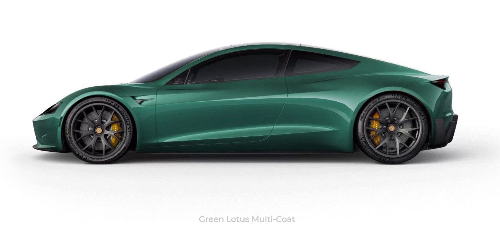
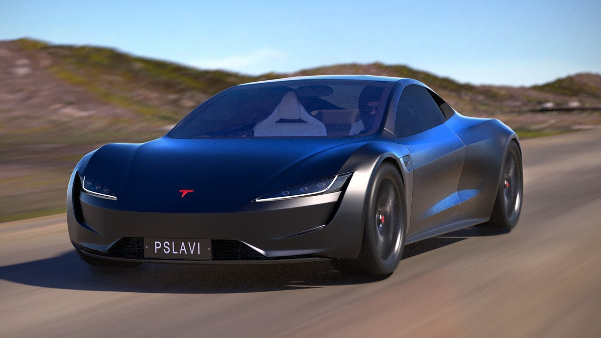
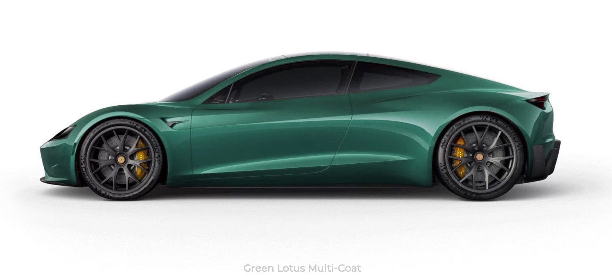
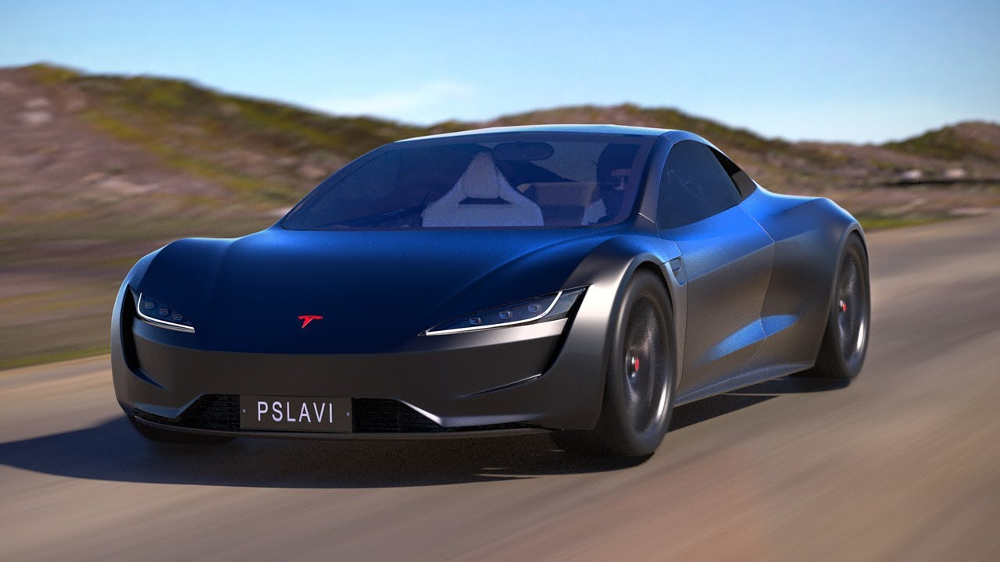

Tesla — американская компания, производитель электромобилей и решений для хранения
электрической энергии. Компания была основана в июле 2003 года Мартином Эберхардом и Марком
Тарпеннингом, но нынешнее руководство компании называет сооснователями Илона Маска, Джеффри Брайана
Страубела и Иэна Райта.
Тесла установила в свои автомобили асинхронный, 4х полюсный трехфазный двигатель, с жидкостной системой
охлаждения. При размере с арбуз – двигатель выдаёт от 382 л/с на колёса. Сам двигатель является
собственной разработкой компании Тесла.
Tesla занимает второе место среди самых быстрых спортивных электромобилей, получив 9,55 балла из 10.
Максимальная скорость этого электромобиля составляет 260 км/ч, разгон от 0 до 100 км/ч занимает 3,3
секунды.
Средний расход Tesla Model S колеблется в районе 20-30 кВт на 100 км. Для анализа возьмем верхнюю
границу в 30 кВт. Средняя цена на кВт в России около 4 рублей. В итоге получаем стоимость энергии на 100
км - 120 рублей.
Компания Tesla (основанная как Tesla Motors) была зарегистрирована 1 июля 2003 года Мартином Эберхардом
и Марком Тарпеннингом. Ян Райт был третьим сотрудником Tesla, присоединившимся к ней несколько месяцев
спустя. В феврале 2004 года трое основателей привлекли инвестиции в размере 7,5 млн долларов США, при
этом Илон Маск внес 6,5 млн долларов. Маск стал председателем совета директоров и назначил Эберхарда
генеральным директором.
Целью Tesla было начать со спортивного автомобиля премиум-класса, ориентированного на первых
пользователей, а затем перейти к более массовым автомобилям, включая седаны и доступные компактные
автомобили. Прототипы первого автомобиля Tesla были официально представлены публике 19 июля 2006 года в
Санта-Монике (Калифорния).
 


